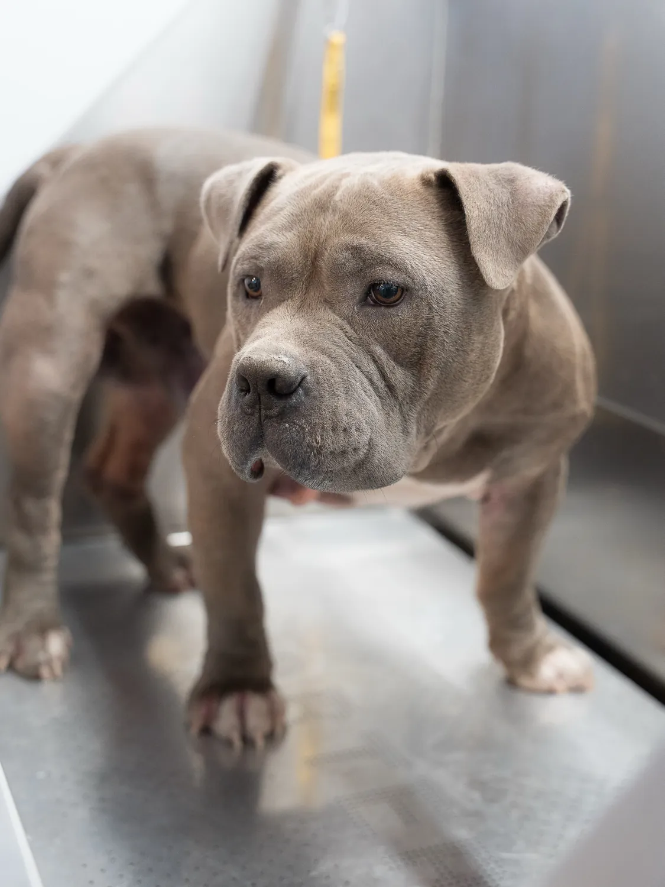

Uno a uno.
De verdad.
Atención individual y sin jaulas. Organizamos las citas para dedicarle el espacio y la atención que necesita.
Después de muchos años trabajando en el sector, decidí montar mi propio negocio. Bimba, mi bulldog francés, es la razón de todo esto.
 Shadia + Bimba ♡
Shadia + Bimba ♡

En Pelucans cada detalle está hecho con paciencia, dedicación y mucho cariño. Por eso trabajamos uno a uno, sin jaulas, con orejeras protectoras en el secado y con tiempo de sobra para los grandullones.
Atención individual y sin jaulas. Organizamos las citas para dedicarle el espacio y la atención que necesita.
Si un perro grande necesita una tarde entera, reservamos ese tiempo para cuidarlo con calma, como a Bruce.
Su carácter y vuestra rutina importan tanto como el acabado. Hablamos contigo antes de empezar.
Bulldog francés y fundadora honoraria. «La razón de todo esto.»

San Bernardo. Todo lo que tiene de grande lo tiene de amoroso. Se lleva una tarde entera de mimos.
Mastín y cliente fiel: viene cada 15 días a su sesión de mantenimiento de ozono.
Bañera de acero inoxidable para todos los tamaños, orejeras protectoras en el secado y cosmética formulada para perros.
Cuéntanos cómo es, qué le gusta y qué necesita. Del resto nos encargamos nosotros, con calma.